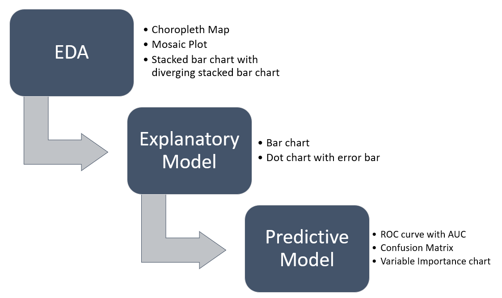
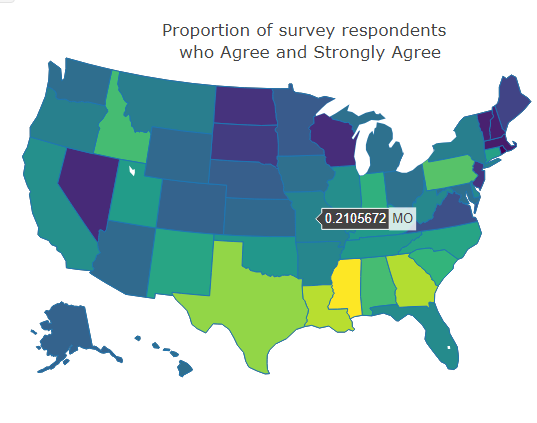
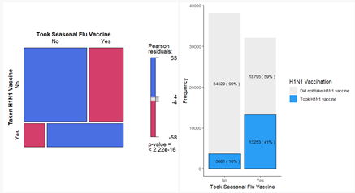
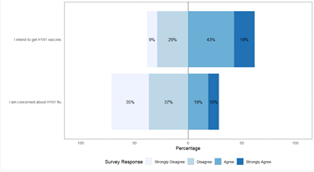
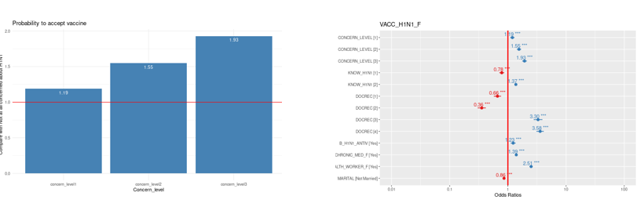
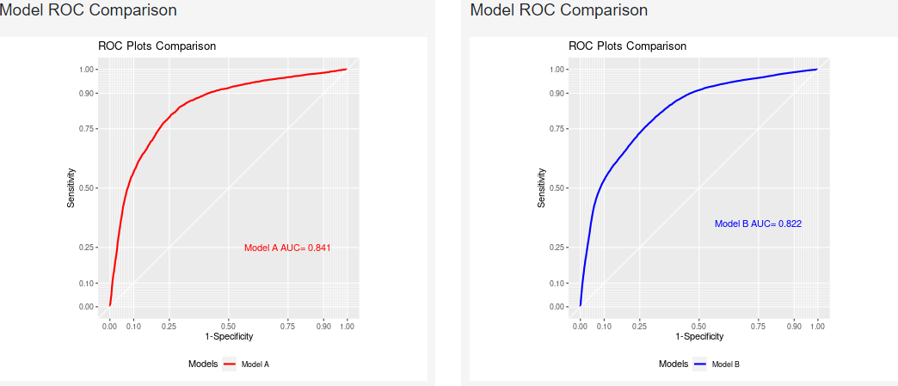
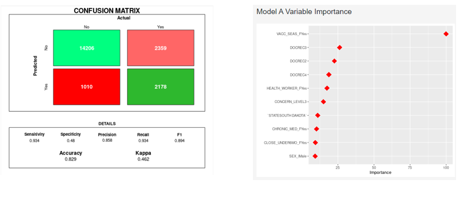

VSAP: Let’s get vaccinated.
VSAPS- Vaccination Survey Analysis and Prediction with Shiny
Hai Dan1 Lim Pek Loong Desmond1 Tay Kai Lin1
1 Singapore Management University
Introduction
Pervasive vaccination to achieve herd immunity is a key public health measure to counter COVID-19. However, vaccination is voluntary, and everyone has different attitudes towards vaccines that influence whether they take the vaccine. Drawing on the United States National 2009 H1N1 Flu Survey (NHFS) – an extensive study on attitudes to H1N1 and its vaccine – we hope to model possible parallel attitudes towards COVID-19.
Motivation and Objectives
The overall motivation of this project is to assist public health authorities with insights on how to increase vaccination rates by analyzing factors that may influence whether an individual undergoes vaccination. The specific objectives of the Shiny application are to:
Understand the behavioral and risk factors influencing an individual to undergo vaccination and build an explanatory model to select factors that have a statistically significant relationship with vaccination
Using the associations between the survey data and the target outcome to generate good predictions for future outcomes.
Literature Review
We reviewed two academic projects by Singapore Management University (SMU) – Employee Attrition Analysis and Visualization [2020] and How Healthy Is Your Neighborhood [2019]. We have decided to make improvements to our predictive model by enabling the customization of training of models and including comparison methods like confusion matrix. We have also decided to include a data dictionary to provide descriptions for the variables in our dataset which are almost all abbreviations.
Application FlowChart

Analysis Techniques
Exploratory Data Analysis
Chloropleth Map
Choropleth map visualizes the proportion of survey respondents who agree and disagree to ‘I intend to get the H1N1 vaccine’ by state. There is a cluster with lighter colors (representative of a higher proportion) in the south-east region of the map.

Mosaic plot and stacked bar chart
Mosaic plots visualizes relationship between key behavioral and risk factors with target variable while stacked bar charts visualizes distribution of variables stacked by the target variable. The most statistically significant factor on target variable is whether the individual has taken the seasonal flu vaccine.

Diverging Stacked Bar Chart
Diverging stacked bar charts visualizes distribution of survey response by demographic on their concern about H1N1 and intend to take the vaccine.

Explanatory Model
A bar chart is selected for user visualize each of the explanatory variable in the result of the odd ratio.

H1N1 vaccination probability is 119% higher in concern level1(not very concerned about H1N1), compared to concern level0 (Not at all concerned about H1N1). And H1N1 vaccination probability is 155% higher in concern level2 (somewhat concerned about H1N1), compared to concern level0. H1N1 vaccination probability is 193% higher in concern level3(very concerned about H1N1), compared to concern level0.
The dot chart with error bar is selected for plotting out all the odd ratio result in a single plot. When we applied the uncertainty to the dot plot with the population data, the confidence interval within 95% is shown.
Compared to the bar chart which highlights the influence within one variable category, dot chart provides an overview of all the variables in the explanatory model. We can see that DOCREC2 and DOCREC3 are very outstanding, and a very low H1N1 vaccination probability is 35.54%. A demonstrative high H1N1 vaccination probability is 330% can be seen in the chart.
Predictive Model
54 different predictive models with different options for training/test data size and k-fold cross validation are available for users to compare between with machine learning models.

The ROC curves with AUC value will be generated for model comparison. Confusion matrix values of the two selected models will also be generated of the user to assess the models based on Accuracy, Specificity, Precision, Recall, F1 score and Kappa.

The top 10 variables with highest variable importance of each model is shown to highlighting the variables that contributed to the models’ predictive capabilities.
Future Steps
We suggest that further development of the app address the following ideas:
Additional user interaction features within the app: allowing modification i.e. removal of variables, to further tune the predictive model and how it affects the predictive capabilities.
The application could be enhanced to allow the uploading of similar survey data to make use of EDA and modeling capabilities already present in the application.